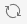
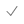
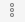
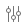
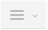
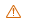
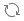

WP Toolkit¶
WP Toolkit es una interfaz de gestión que le permite instalar, configurar y administrar WordPress de forma sumamente fácil. Este está disponible si en Plesk se ha instalado la extensión WP Toolkit.
Nota
WP Toolkit puede instalar, configurar y gestionar WordPress 4.9 y versiones posteriores.
Nota
La extensión WP Toolkit es gratuita en el caso de las ediciones Web Pro y Web Host Plesk. En el caso de la edición Web Admin, puede contratarse por un módico precio.
Instalación de WordPress¶
Para instalar una nueva instalación de WordPress, vaya a WordPress y haga clic en Instalar.
{kind=link}
Allí puede:
Instalar la versión más reciente de WordPress con la configuración predeterminada haciendo clic en Instalar.
Cambie la configuración predeterminada (incluyendo la versión deseada de WordPress, el nombre de la base de datos, la configuración de actualización automática, etc.) y haga clic en Instalar.

Nota
Para instalar WordPress, WP Toolkit recupera los datos de wordpress.org. Por omisión, si WP Toolkit no pudiera establecer una conexión en 15 segundos, se considera que wordpress.org no está disponible.
En la lista de instalaciones existentes de WordPress presente en WordPress, aparecerá una nueva instalación.
{kind=link}
Adición de instalaciones existentes de WordPress a WP Toolkit¶
Todas las instalaciones de WordPress añadidas a través de WP Toolkit o de la página Aplicaciones aparecen de forma automática en WP Toolkit. Aquellas que se hubieran instalado de forma manual deberán agregarse a WP Toolkit. Si ha efectuado la actualización desde una versión anterior de Plesk y usaba WordPress, le recomendamos añadir todas las instalaciones existentes de WordPress a WP Toolkit.
Para añadir instalaciones de WordPress a WP Toolkit:
- Vaya a WordPress.
- Haga clic en Analizar.
La instalación de WordPress ha sido añadida y ahora se muestra en la lista de instalaciones existentes de WordPress presente en WordPress.
Importación de instalaciones de WordPress¶
Puede usar la prestación «Migración de sitio web» para migrar sitios web WordPress de su propiedad que no estén alojados en Plesk. Al migrar un sitio web WordPress, Plesk copia todos sus archivos y la base de datos a su servidor. Una vez migrado el sitio, puede gestionarlo mediante WP Toolkit.
Para migrar un sitio web WordPress existente, vaya a Sitios web y dominios > WordPress, haga clic en Importar y siga las indicaciones.
Preinstalación de WordPress en dominios de clientes¶
WP Toolkit le permite tener WordPress preinstalado en los nuevos dominios. En dichos dominios puede instalar listas de plugins y temas predefinidas.Asimismo, puede permitir a sus clientes activar Smart Updates.
Para cada plan de hosting puede seleccionar las siguientes opciones:
- No preinstalar WordPress.
- Únicamente preinstalar WordPress.
- Preinstalar WordPress con un conjunto predefinido de plugins y temas.
- Preinstalar WordPress con o sin un conjunto predefinido de plugins y temas y permitir la activación de Smart Updates.
Si opta por cualquiera de las últimas tres opciones, WordPress se instalará de forma automática en el primer dominio de cada suscripción basada en el plan de hosting (dominio principal).
Para preinstalar WordPress en los dominios nuevos:
- Vaya a Planes de servicio.
- Haga clic en Añadir un plan para crear un plan o bien haga clic en el nombre de un plan existente para editarlo.
- Si ha instalado la licencia de Smart Updates, los clientes también podrán activar Smart Update. Puede indicar el número exacto de instalaciones de clientes que pueden usar Smart Update. Para ello, deseleccione la casilla «Ilimitado» presente al lado de “Sitios web WordPress con Smart Update” e indique el límite deseado. Sea cuál sea el número especificado, los clientes no pueden usar Smart Update en más instancias de WordPress que las permitidas por su licencia de Smart Update.
- Vaya a la pestaña “Servicios adicionales”.
- Decida si sólo desea preinstalar WordPress o bien desea preinstalar WordPress con un conjunto predefinido de plugins y temas:
- Si únicamente desea instalar WordPress, seleccione “Instalar WordPress” debajo de “WP Toolkit”.
- Si de lo contrario desea instalar WordPress con un conjunto predefinido de plugins y temas, seleccione “Instalar WordPress con el conjunto” debajo de “WP Toolkit”.
- Haga clic en ACEPTAR o bien en Actualizar y sinc si desea editar un plan existente.
Ahora, cada vez que cree una suscripción basada en este plan de hosting, WordPress se instalará automáticamente en el dominio principal de dicha suscripción. Esto no afectará a las suscripciones existentes basadas en este plan de hosting.
Administración de conjuntos¶
Un conjunto es una lista predefinida de plugins y temas de WordPress. WP Toolkit incluye varios conjuntos preconfigurados, si bien usted siempre puede crear más conjuntos. Por defecto, cada conjunto que cree estará a disposición de los clientes. Puede usar los conjuntos de las siguientes maneras:
- Puede preinstalar conjuntos en los sitios web de los clientes. Para ello, configure un plan de hosting para preinstalar WordPress y escoja añadir un único conjunto. De esta forma, se instalará WordPress junto con todos los plugins y temas incluidos en el conjunto.
- Usted y sus clientes pueden seleccionar un conjunto para instalarlo junto con WordPress cuando se realiza una instalación personalizada. Los clientes pueden ver los plugins y temas que se incluyen en un conjunto.
- Puede instalar conjuntos en sitios web existentes que le pertenezcan a usted o a sus clientes.
Para crear un conjunto:
Vaya a WordPress, haga clic en la pestaña «Conjuntos» y haga clic en Crear conjunto.
Asígnele un nombre y haga clic en Crear.
Haga clic en «Añadir plugins» y a continuación en Añadir plugin. Localice el plugin deseado, selecciónelo en la lista y haga clic en Añadir.
Nota
Una vez instalado el conjunto en un sitio web WordPress, puede seleccionar los plugins a activar y los que no. Para ello, debajo de la columna «Estado», desactive los plugins que no desee activar.
Una vez añadidos todos los plugins deseados, cierre el panel.
Repita estos mismos pasos para los temas.
Nota
Puede escoger el tema a activar una vez el conjunto haya sido instalado en un sitio web WordPress. Para ello, debajo de la columna «Estado», active el tema que desee activar.
{kind=link}
Ahora puede seleccionar el conjunto como opción de preinstalación en el plan de hosting o bien durante la instalación personalizada de WordPress.
Para añadir plugins y temas a un conjunto:
Vaya a WordPress, haga clic en la pestaña «Conjuntos».
Haga clic en «Añadir plugins» para el conjunto que desee modificar y haga clic en Añadir plugin. Localice el plugin deseado, selecciónelo en la lista y haga clic en Añadir.
Nota
Una vez instalado el conjunto en un sitio web WordPress, puede seleccionar los plugins a activar y los que no. Para ello, debajo de la columna «Estado», desactive los plugins que no desee activar.
Una vez añadidos todos los plugins deseados, cierre el panel.
Repita estos mismos pasos para los temas.
Nota
Puede escoger el tema a activar una vez el conjunto haya sido instalado en un sitio web WordPress. Para ello, debajo de la columna «Estado», active el tema que desee activar.
La adición de plugins y temas a un conjunto no afecta a las suscripciones existentes donde se haya aplicado el conjunto.
Para instalar un conjunto en instalaciones existentes de WordPress:
- Vaya a WordPress, vaya a la pestaña «Conjuntos» y haga clic en el icono correspondiente al conjunto que desea instalar.
- Haga clic en Instalar conjunto, seleccione los sitios web donde desea instalar el conjunto y haga clic en Instalar.
{kind=link}
El conjunto se instalará en las instalaciones WordPress seleccionadas. Los plugins y temas del conjunto serán activados si así lo indicó cuando creó el conjunto.
Para eliminar los plugins y temas seleccionados de un conjunto:
- Vaya a WordPress, haga clic en la pestaña «Conjuntos».
- Haga clic en el número que aparece debajo de las columnas «Plugins» o “Temas” (por ejemplo,
2 en total) para ver la lista de plugins o temas incluidos en el conjunto. - Haga clic en el icono
 presente al lado de los nombres de los plugins o temas que desea eliminar.
presente al lado de los nombres de los plugins o temas que desea eliminar.
Para eliminar todos los plugins y temas de un conjunto:
- Vaya a WordPress, haga clic en la pestaña «Conjuntos».
- Haga clic en el icono correspondiente al conjunto que desea modificar, haga clic en Eliminar todos los plugins o bien en Eliminar todos los temas y haga clic en Sí.
La eliminación de plugins y temas de un conjunto no afecta en ningún modo a las suscripciones existentes a las que ya se ha aplicado el conjunto.
Si desea cambiar el nombre de un conjunto:
- Vaya a WordPress, haga clic en la pestaña «Conjuntos».
- Haga clic en el nombre del conjunto cuyo nombre desea modificar, indique el nombre nuevo y haga clic en el icono
 .
.
Si desea eliminar un conjunto:
Vaya a WordPress, haga clic en la pestaña «Conjuntos».
Haga clic en el icono correspondiente al conjunto que desea eliminar, haga clic en Eliminar conjunto y haga clic en Sí.
{kind=link}
La eliminación de un conjunto no afecta en ningún modo a las suscripciones existentes a las que ya se ha aplicado el conjunto. En el caso de todos los planes de hosting que usaban el conjunto eliminado, se restablecerá la configuración de preinstalación de WordPress presente en la pestaña “Servicios adicionales”, “WP Toolkit” se establece a «None».
Establecimiento de un número máximo de instalaciones de WordPress de los clientes¶
Puede establecer un límite sobre la cantidad de instalaciones de WordPress que pueden instalar y gestionar sus clientes. El límite se refiere a las siguientes formas de aumentar el número de instalaciones de WordPress:
- Instalación de sitios web WordPress mediante WP Toolkit.
- Adición de instalaciones existentes de WordPress mediante la prestación “Analizar”.
- Clonación de instalaciones de WordPress.
Nota
Las instalaciones técnicas creadas por el propio WP Toolkit (por ejemplo, clones creados por Smart Updates) no contarán en el límite.
Para establecer un límite sobre el número de instalaciones de WordPress:
Puede establecer un límite en una suscripción o plan de servicio concreto:
- Vaya a Suscripciones y haga clic en Añadir suscripción y cree una suscripción o bien haga clic en el nombre de una suscripción existente y a continuación haga clic en Personalizar en la barra lateral derecha.
- Vaya a Planes de servicio y haga clic en Añadir un plan para crear un plan o bien haga clic en el nombre de un plan existente para editarlo.
Por defecto no se establece ningún límite. Al lado de “Sitios web WordPress”, deseleccione la casilla “Ilimitado”. También puede limitar el número de sitios web WordPress que pueden usar la prestación “Smart Updates”. En este caso, deseleccione también la casilla que se muestra al lado de “Sitios web WordPress con Smart Update”.
Indique el número de clientes de sitios web WordPress que pueden gestionar sus clientes y/o el número de sitios web WordPress que pueden usar la prestación “Smart Updates”.
Haga clic en ACEPTAR o bien en Actualizar y sinc si desea editar un plan existente.
{kind=link}
Ha establecido un límite sobre el número de instalaciones WordPress de los clientes.
Nota
Si establece un límite inferior al número de sitios web de los que dispone un cliente, no se eliminarán las instalaciones redundantes de forma automática. El número de instalaciones del cliente permanecerá intacto, a menos que el cliente elimine o cancele la asociación de algunas de estas. Entonces no podrá volverse a disponer de estas instalaciones ni aumentar el número de instalaciones de ninguna otra forma más allá del límite.
Limitación del número de backups de WP Toolkit de los clientes¶
Puede establecer el número máximo de backups de WP Toolkit que pueden crear sus clientes.
Este límite impide a sus clientes usar toda la cuota de espacio en disco permitida. El límite se aplica a todos los sitios web pertenecientes a una suscripción. Si no desea que los clientes tengan acceso a los backups de WP Toolkit, defina este límite a cero.
Para establecer un límite sobre el número de backups de WP Toolkit:
Puede establecer un límite en una suscripción o plan de servicio concreto:
- Vaya a Suscripciones y haga clic en Añadir suscripción y cree una suscripción o bien haga clic en el nombre de una suscripción existente y a continuación haga clic en Personalizar en la barra lateral derecha.
- Vaya a Planes de servicio y haga clic en Añadir un plan para crear un plan o bien haga clic en el nombre de un plan existente para editarlo.
Por defecto, no se establece ningún límite. Al lado de “Backups de WordPress”, deseleccione la casilla “Ilimitado” e indique el número de backups que pueden crear los clientes.
Haga clic en ACEPTAR o bien en Actualizar y sinc si desea editar un plan existente.
{kind=link}
Ha establecido un límite máximo de backups de WP Toolkit para los clientes.
Nota
Si establece un límite inferior al número de backups de los que dispone un cliente, no se eliminarán los backups redundantes de forma automática. No se modificará el número de backups existentes del cliente a menos que este elimine algún backup. Entonces no podrán crearse backups por encima del límite.
Administración de instalaciones de WordPress¶
Vaya a WordPress para ver todas sus instalaciones de WordPress.
WP Toolkit agrupa la información sobre cada una de las instalaciones en bloques denominados tarjetas.
{kind=link}
Una tarjeta muestra una captura de pantalla de su sitio web y varios controles para acceder fácilmente a las herramientas usadas con más frecuencia. La captura cambia en tiempo real para así reflejar los cambios que realice en su sitio web. Por ejemplo, si activa el modo de mantenimiento o modifica el tema de WordPress, la captura del sitio web cambiará de inmediato.
Nota
Los cambios efectuados directamente en WordPress se sincronizan con WP Toolkit una vez al día. Si desea efectuar la sincronización de forma manual, haga clic en el botón .
{kind=link}
Cuando mueva el cursor del ratón sobre la instantánea del sitio web, verá lo siguiente:
- Botón Abrir sitio web. Para abrir el sitio web en otra pestaña del navegador, haga clic en el botón.
- La última vez se actualizó la fecha y la hora de la instantánea. Para actualizar la instantánea ahora, en la esquina superior derecha de la instantánea, haga clic en el icono .
{kind=link}
Aquí también puede:
Cambiar el nombre de su sitio web. Para ello, haga clic en el icono , asigne un nombre al sitio y haga clic en .
Acceder a WordPress como administrador. Para ello, haga clic en Iniciar sesión debajo de la captura de pantalla del sitio web.
Editar la configuración general de WordPress. Para ello, haga clic en “Configurar” al lado de Iniciar sesión.
Vaya a la pantalla del dominio en Sitios web y dominios. Para ello, haga clic en Administrar dominio debajo de la instantánea del sitio web.
{kind=link}
{kind=link}
{kind=link}
{kind=link}
Estado¶
Es frecuente que los sitios web WordPress sean objetivo de los hackers. El hecho de no disponer de los plugins, temas y del núcleo de WordPress debidamente actualizado suponen un elevado riesgo de seguridad.
En la sección “Estado” puede:
- Ver si el núcleo de WordPress, así como los plugins y temas instalados, están actualizados o actualizarlos si es necesario.
- Comprobar si se ha activado el soporte SSL/TLS y, de no estarlo, activarlo.
- Verificar la seguridad de su sitio web y mejorar su seguridad.
{kind=link}
Los controles presentes en la sección “Herramientas” le permiten acceder a las siguientes opciones y herramientas de forma sumamente fácil:
- “Indexación de buscadores” muestra su sitio web en los resultados de búsqueda de los buscadores.
- «Copia en caché (nginx)» reduce el tiempo necesario para la carga del sitio y disminuye la carga del servidor.
- “Depuración” le ayuda a depurar un sitio web que no esté preparado para ser visualizado y que esté en fase de pruebas o desarrollo.
- «Protección con contraseña» especifica la contraseña que usará para acceder a WordPress mediante Plesk.
- «Controlar wp-cron.php» para establecer una ejecución periódica de
wp-cron.php.
Encima de las secciones «Estado» y «Herramientas» encontrará las siguientes prestaciones de WP Toolkit:
{kind=link}
- “Administrador de archivos” para gestionar los archivos del sitio web en el administrador de archivos.
- “Copiar datos” para copiar el contenido de su sitio web a otro.
- “Clonar” para crear una copia completa de su sitio web.
- “Copiar/restaurar” para crear un backup de su sitio web y restaurarlo, de ser necesario.
- “Registros” para ver los registros de WP Toolkit de la instalación para la que necesita resolver la incidencia.
En la parte inferior de la tarjeta del sitio web puede:
Instalar actualizaciones y configurar la actualización automática.
Activar Smart Update, una prestación premium que le ayuda a garantizar que sus sitios web en producción siempre están debidamente actualizados sin el riesgo de dañarlos.
Activar el “Modo de mantenimiento”, que oculta el contenido de su sitio web a los visitantes.
{kind=link}
En las demás tres pestañas puede gestionar los plugins y temas de la instalación, así como modificar las credenciales de la base de datos.
Etiquetas de sitio web¶
Las etiquetas de sitio web son identificadores preconfigurados que puede asignar a sus sitios web (por ejemplo, «de prueba», «producción», etc.).
En función de su proyecto, puede que sea necesario alojar múltiples copias de un sitio web para distintas finalidades. Las etiquetas le ayudarán a distinguir un sitio web de otro.
Por defecto, un sitio web no dispone de ninguna etiqueta. Si desea que tenga una, haga clic en AÑADIR ETIQUETA (en la tarjeta del sitio web presente al lado del nombre del sitio) y seleccione la etiqueta deseada. Las etiquetas son opcionales y a posteriori puede modificarlas o eliminarlas.
{kind=link}
Administración de la visualización de tarjetas¶
Puede escoger la forma en que WP Toolkit muestra las tarjetas. La vista predeterminada de las «Tarjetas» es ideal para un número pequeño de instalaciones. Si dispone de un gran número de ellas, colapse las tarjetas .
{kind=link}
Asimismo, puede Filtrar las instalaciones para así gestionarlas de forma más fácil.
{kind=link}
Eliminación y cancelación de la asociación de instalaciones¶
Puede cancelar la asociación de instalaciones de WordPress que no desee ver ni gestionar en WP Toolkit. Dicha cancelación no implica la eliminación de la instalación en cuestión, simplemente la oculta en WP Toolkit. Una instalación cuya asociación haya sido cancelada volverá a asociarse a WP Toolkit cuando se efectúe otra búsqueda de instalaciones de WordPress. Puede cancelar la asociación de las instalaciones de WordPress de forma individualizada o para varias instalaciones a la vez.
Para cancelar la asociación de instalaciones de WordPress:
- Vaya a WordPress y:
- (Para cancelar la asociación de una instalación individual) En la tarjeta de la instalación que cuya asociación desea cancelar, haga clic en el icono .
- (Para cancelar la asociación de múltiples instalaciones) Seleccione las instalaciones cuya asociación desea cancelar y haga clic en Cancelar asociación.
- Haga clic en Cancelar asociación.
{kind=link}
A diferencia de la cancelación de asociación, la eliminación completa elimina una instalación de WordPress. Puede eliminar cualquier instalación - sin importar cómo se instaló: mediante WP Toolkit, a través de la página Aplicaciones o manualmente. Puede eliminar instalaciones de WordPress de forma individual o bien múltiples instalaciones a la vez.
Para eliminar instalaciones de WordPress:
Indexación de buscadores y depuración¶
Por defecto, un sitio web de WP Toolkit nuevo aparece en los resultados de búsqueda de los buscadores. Si su sitio web todavía no está listo para visualizarse públicamente, desactive «Indexación de buscadores».
Si está instalando WordPress para finalidades de análisis o desarrollo, puede activar «Depuración» para detectar y corregir errores de forma automática en el código del sitio web. Para ello, haga clic en  que aparece al lado de “Depuración”, seleccione las herramientas de depuración de WordPress que desea activar y haga clic en ACEPTAR.
{kind=link}
Actualización de instalaciones de WordPress¶
Para garantizar la seguridad de su sitio web es necesario que el núcleo de WordPress siempre esté debidamente actualizado, de igual modo que los plugins y temas instalados. Esta acción puede hacerse de forma manual o automática:
- Las actualizaciones manuales le permiten controlar el momento en que se instalan las actualizaciones. Por ejemplo, puede esperar y ver si la instalación de una determinada actualización ocasionó problemas a otros usuarios de WordPress. De todos modos, recuerde que es necesario efectuar actualizaciones de forma periódica para disfrutar de todas las prestaciones.
- Las actualizaciones automáticas le permiten tener la certeza de que su instalación de WordPress siempre estará debidamente actualizada. De todos modos, a veces las actualizaciones pueden dañar su instalación y puede que esta opción ocasione incidencias en la misma.
Por motivos de seguridad, le recomendamos configurar la actualización automática.
Para actualizar una instalación de WordPress de forma manual:
Vaya a WordPress. Si su instalación de WordPress necesita una actualización, verá los mensajes correspondientes en la sección «Estado» (por ejemplo, «Instalar actualizaciones de plugins»).
Haga clic en cualquier mensaje sobre actualizaciones disponibles, espere a que WP Toolkit cargue la lista de actualizaciones disponibles y seleccione las actualizaciones que desea instalar.
Nota
de existir alguna actualización para el núcleo de WordPress, verá la casilla «Punto de restauración». Deje esta casilla seleccionada si desea que se cree un punto de restauración que pueda usarse para revertir la actualización si algo va mal.
Haga clic en Actualizar.
{kind=link}
{kind=link}
Se aplicaran las actualizaciones seleccionadas.
Si bien WP Toolkit comprueba la existencia de actualizaciones de forma periódica, también puede comprobarlo en cualquier momento. Para ello, haga clic en «Buscar actualizaciones».
Para configurar las actualizaciones automáticas para una instalación de WordPress:
Vaya a WordPress, escoja la instalación de WordPress que desea actualizar automáticamente y, en la tarjeta de la instalación, haga clic en “Configuración de actualización automática”.
Seleccione la configuración de actualización automática deseada. Puede configurar las actualizaciones automáticas por separado para los temas, plugins y núcleos de WordPress (por ejemplo, puede escoger activar las actualizaciones automáticas para plugins y temas pero no para el núcleo de WordPress). Preste atención a las siguientes recomendaciones:
- Si selecciona “No” al lado de “Actualizar WordPress de forma automática”, se desactivará la actualización automática del núcleo de WordPress, lo cual es inseguro.
- Si su sitio web está disponible de forma pública y le preocupa que la aplicación automática de actualizaciones pueda afectarlo negativamente, seleccione “Sí,pero solo las actualizaciones (de seguridad) secundarias”.
- Si su sitio web no es una versión pública (en fase de prueba) de un sitio web WordPress, seleccione “Sí, todas las actualizaciones (principales y secundarias)”. Esto hará que su sitio web esté debidamente actualizado, garantizando que, en caso de que alguna actualización lo dañara, el sitio de producción no se vería dañado, puesto que únicamente afectaría al sitio de prueba.
Haga clic en ACEPTAR.
{kind=link}
Si le preocupa que las actualizaciones automáticas de WordPress puedan dañar su sitio web, use Smart Updates. Con Smart Updates, las instalaciones de WordPress siempre se actualizan de forma segura, sin riesgo de dañar los sitios web.
Copia y restauración de instalaciones de WordPress¶
Para ayudarle a evitar una posible pérdida de datos, puede copiar y restaurar sitios web mediante WP Toolkit o a través del mecanismo general de backups de Plesk denominado Administrador de backups.
La creación de backups en WP Toolkit puede resultar más fácil que en el administrador de backups por las siguientes razones:
- WP Toolkit copia un sitio web individual, mientras que el administrador de backups copia toda la suscripción con todos los datos y sitios web de la suscripción.
- Si necesita copiar un solo sitio web, un backup de WP Toolkit requiere de menos tiempo y espacio en disco.
- La creación de backups en WP Toolkit no requiere efectuar ninguna configuración adicional.
Para copiar un sitio web WordPress:
Vaya a WordPress y haga clic en Copiar / Restaurar en la tarjeta de la instalación de WordPress que desea copiar.
Haga clic en Copiar.
{kind=link}
Una vez finalizado el backup, este se mostrará en la lista de backups de WP Toolkit.
{kind=link}
Para restaurar un sitio web WordPress:
Vaya a WordPress y haga clic en Copiar / Restaurar en la tarjeta de la instalación de WordPress cuyo backup desea restaurar.
Haga clic en el icono correspondiente al backup que desea restaurar.
Nota
La restauración de un backup elimina todos los cambios que haya efectuado en el sitio tras la creación del backup. Por este motivo, WP Toolkit le sugiere que copie el estado actual de su sitio y que use este backup para ejecutar la restauración.
Haga clic en Restaurar.
{kind=link}
Ha restaurado su backup.
Para estar todavía más seguros, es posible que desee descargar los archivos de backup de WP Toolkit para conservarlos en otra ubicación.
Para descargar los archivos de backup de WP Toolkit:
Vaya a WordPress y haga clic en Copiar / Restaurar en la tarjeta de la instalación de WordPress cuyos archivos de backup desea descargar.
Haga clic en el icono correspondiente al backup cuyo archivo desea descargar.
Se le redireccionará al directorio en el administrador de archivos (
/wordpress-backupsen el directorio principal del sitio web) donde se almacenan los backups de WP Toolkit.Haga clic en el icono  correspondiente al archivo de backup que desea descargar y haga clic en Descargar.
{kind=link}
{kind=link}
Ha descargado un archivo de backup.
Puede eliminar los backups de WP Toolkit que ya no necesite.
Para eliminar un backup de WP Toolkit:
- Vaya a WordPress y haga clic en Copiar / Restaurar en la tarjeta de la instalación de WordPress cuyo archivo de backup desea eliminar.
- Haga clic en el icono correspondiente al backup que desea eliminar y haga clic en Eliminar.
{kind=link}
Ha eliminado un backup.
Smart Updates¶
Smart Updates es una prestación premium disponible a partir de la versión 3.x de WP Toolkit. Esta le ayuda a garantizar que sus sitios web en producción están debidamente actualizados sin riesgo de dañarlos. Smart Updates analiza las consecuencias potenciales de instalar actualizaciones y le avisa sobre si es seguro o no proceder con las mismas.
Para garantizar un nivel óptimo de protección de sus sitios, es necesario actualizar WordPress de forma periódica: los temas, plugins y el núcleo. De todos modos, dichas actualizaciones pueden dañar potencialmente sus sitios. Las actualizaciones manuales requieren de su atención y en ningún caso garantizan que sus sitios web seguirán estando operativos.
Con el fin de garantizar que una instalación de WordPress siempre se actualiza de forma segura sin ocasionar daños a su sitio, hemos desarrollado la prestación Smart Updates. Entre sus ventajas cabe destacar:
- Clonación de la instalación, posterior análisis del clon y creación de instantáneas de las páginas del sitio (incluyendo tanto el contenido dinámico como carruseles).
- Actualización del clon, nuevo análisis del mismo y creación de nuevas instantáneas de las páginas del sitio web.
- Detección de incidencias (problemas con PHP, errores en códigos de respuesta de HTTP, cambios en los nombres de páginas, etc.): no solo aquellas ocasionadas por la actualización, sino las ya existentes antes de la actualización.
- En el caso de las actualizaciones manuales, Smart Updates le muestra capturas del antes y del después y la previsión sobre si es seguro o no aplicar la actualización. Aquí puede comparar las capturas, ver y descargar el informe detallado sobre las incidencias detecadas y decidir si aplicar o no la actualización al sitio web en producción.
- Por lo que respecta a las actualizaciones automáticas, Smart Updates actualiza el sitio web en producción de forma automática, a menos que exista al menos una incidencia ocasionada por la actualización. De lo contrario, no se procede con la actualización. De todos modos, en ambos casos recibirá un email con los resultados del análisis y las capturas del antes y del después.
Uso de Smart Updates¶
Smart Updates es una prestación de pago que puede comprarse de forma individualizada para cada instalación. Puede usarla tanto con actualizaciones manuales como con actualizaciones automáticas.
Para activar Smart Update:
- Contrate Smart Updates e instale la llave de licencia adicional recibida. Puede activar Smart Update de forma individualizada para cada una de las instalaciones.
- Vaya a WordPress y active «Smart Update» en la tarjeta de la instalación.
Ha activado Smart Updates. Ahora puede usar esta prestación con actualizaciones manuales o automáticas.
Nota
Smart Updates no es una alternativa a los backups. Le recomendamos crear backups de sus instalaciones WordPress de forma periódica, especialmente si usa actualizaciones automáticas.
Para usar Smart Update de forma manual:
Compruebe que dispone de suficiente espacio en disco para crear una copia completa de la instalación que desea actualizar.
En la tarjeta de la instalación, haga clic en «Buscar actualizaciones», seleccione las actualizaciones que desea instalar y haga clic en Actualizar.
Espere a que Smart Update clone y analice su sitio web, lo que puede tardar un poco en función del tamaño del sitio web. El análisis se realiza en segundo plano, por lo que el cierre de la ventana no interrumpirá la actualización.
Vea las capturas de pantalla del antes y del después de las distintas páginas de su sitio web por separado o bien en modo comparativo.
Seleccione una página del sitio web y vea las incidencias detectadas. Asimismo, también puede ver las incidencias detectadas para todo el sitio y descargar un informe sobre las mismas en la pestaña «Resumen del sitio web».
En el caso de que Smart Update no detecte ninguna incidencia relacionada con la actualización y las capturas así lo confirmen, haga clic en Aplicar actualizaciones y a continuación haga clic en ACEPTAR. Smart Update actualizará la instalación de producción y eliminará el clon.
Si no desea actualizar la instalación de producción, haga clic en Descartar.
{kind=link}
Para usar Smart Update de forma automática:
- Compruebe que dispone de suficiente espacio en disco para crear una copia completa de la instalación que desea actualizar.
- Cuando existe una actualización, Smart Update clonará la instalación, actualizará el clon y procederá con su análisis una vez finalizada la actualización.
- Si la actualización no ocasiona ninguna incidencia, Smart Update actualiza la instalación de forma automática. En caso de que detecte que la actualización puede ocasionar al menos una incidencia, no se aplica la actualización. En ambos casos, recibirá un email con el enlace correspondiente. Haga clic en este enlace para abrir un informe con las capturas comparativas del antes y del después de su sitio web en otra ventana del navegador.
Administración de plugins¶
Un plugin de WordPress es un tipo de software de terceros que añade funcionalidades nuevas a WordPress. Con WP Toolkit puede instalar y administrar plugins en una o más instalaciones de WordPress.
Instalación de plugins¶
En WP Toolkit puede instalar plugins en una o todas las instalaciones de WordPress de la suscripción. Usted puede:
- En el repositorio de plugins de wordpress.org puede buscar e instalar plugins.
- Cargar plugins personalizados, que pueden resultarle útiles si no encuentra el plugin apropiado en el repositorio de wordpress.org o si desea instalar su propio plugin.
Para instalar plugins en una determinada instalación de WordPress:
Vaya a WordPress, haga clic en la pestaña «Plugins» de la tarjeta de una instalación y a continuación haga clic en Instalar.
Busque plugins y haga clic en el botón Instalar al lado del plugin que desee instalar. Los plugins instalados se activan de inmediato.
{kind=link}
Para instalar plugins en todas las instalaciones de WordPress de la suscripción:
Seleccione la suscripción deseada.
Vaya a WordPress > haga clic en la pestaña “Plugins” y a continuación haga clic en Instalar.
Busque plugins, seleccione los plugins que desea instalar y haga clic en Seleccionar sitios web.
Nota
si selecciona uno o más plugins y efectúa una nueva búsqueda sin instalar los plugins seleccionados, se restablecerá la selección.
Por omisión, los plugins que se instalan se activan de inmediato. Si no desea que sea así, deseleccione la casilla “Activar tras la instalación”.
Seleccione sitios web donde desea instalar plugins y haga clic en Instalar.
{kind=link}
{kind=link}
Para cargar un plugin:
- Seleccione la suscripción deseada.
- Vaya a WordPress, haga clic en la pestaña «Plugins» y a continuación en Cargar plugin.
- Haga clic en Examinar y vaya a la ubicación del archivo ZIP que contiene el plugin que desea cargar
- Haga clic en ACEPTAR.
Activación y desactivación de plugins¶
Puede activar o desactivar plugins instalados en una instalación determinada o bien en todas las instalaciones que pertenezcan a una suscripción a la vez.
Para activar o desactivar plugins para una instalación determinada:
Vaya a WordPress y haga clic en la pestaña “Plugins” de una tarjeta de instalación.
Debajo de «Estado», active o desactive un plugin para activarlo o desactivarlo.
{kind=link}
Para activar o desactivar plugins para todas las instalaciones de la suscripción:
- Seleccione la suscripción deseada.
- Vaya a WordPress > la pestaña “Plugins”.
- Seleccione el plugin que desea activar o desactivar.
- Haga clic en Activar o en Desactivar.
Actualización de plugins¶
Si es necesario actualizar un plugin, en la pestaña «Plugins» de la tarjeta de instalación podrá ver «Actualizaciones» al lado del plugin. No solo puede actualizar plugins gratuitos, sino también plugins de pago si estos pueden actualizarse de forma normal en el panel de información admin de WordPress.
Nota
WP Toolkit puede actualizar plugins de pago que requieran una licencia siempre que la licencia esté presente. WP Toolkit no puede actualizar plugins de pago que usen métodos de actualización que no sean estándar.
{kind=link}
Puede:
- Actualizar plugins para una determinada instalación. Si desea obtener más información al respecto, consulte el procedimiento “Para actualizar una instalación de WordPress de forma manual”.
- Actualizar plugins instalados en todas las instalaciones de la suscripción.
- Configure la actualización automática para los plugins. Descubra cómo en el procedimiento “Para configurar las actualizaciones automáticas para una instalación de WordPress”.
Para actualizar plugins en todas las instalaciones de la suscripción:
Seleccione la suscripción deseada.
Vaya a WordPress > la pestaña “Plugins”.
Haga clic en «Actualizar a la versión …» al lado del plugin que desea actualizar. Si desea más información sobre la actualización, haga clic en «Registro de cambios» y se le redireccionará a la página del plugin en wordpress.org.
Haga clic en Sí.
{kind=link}
Eliminación de plugins¶
Puede eliminar plugins de una instalación determinada o de todas las instalaciones que pertenezcan a la suscripción a la vez.
Para eliminar plugins de una instalación determinada:
- Vaya a WordPress y haga clic en la pestaña “Plugins” de una tarjeta de instalación.
- Si desea eliminar un plugin, haga clic en el icono correspondiente al plugin que desea eliminar. Si desea eliminar varios plugins, selecciónelos y haga clic en Eliminar.
- Haga clic en Sí.
Si desea eliminar plugins de todas las instalaciones de la suscripción:
- Seleccione la suscripción deseada.
- Vaya a WordPress > la pestaña “Plugins”.
- Seleccione los plugins que desea eliminar, haga clic en Desinstalar y a continuación haga clic en Sí.
Administración de temas¶
Un tema de WordPress determina todo el diseño de su sitio web, incluyendo los colores, las fuentes y la apariencia. De seleccionar otro tema, cambiará la apariencia de su sitio web, pero no se modificará su contenido. A través de WP Toolkit puede instalar y gestionar temas.
Instalación de temas¶
En WP Toolkit puede instalar temas en una o todas las instalaciones de WordPress de la suscripción. Usted puede:
- Buscar e instalar temas presentes en el repositorio de temas de wordpress.org.
- Instalar temas cargados por el administrador de Plesk.
- Cargar temas personalizados, que pueden resultarle útiles si no encuentra el tema apropiado en el repositorio de wordpress.org o si desea instalar su propio tema.
Para instalar temas en una determinada instalación de WordPress:
Vaya a WordPress, haga clic en la pestaña «Temas» de la tarjeta de una instalación y a continuación haga clic en Instalar.
Busque temas y haga clic en el botón Instalar al lado del tema que desee instalar. Por omisión, no se activará el tema instalado.
{kind=link}
Para instalar temas en todas las instalaciones de WordPress de la suscripción:
Seleccione la suscripción deseada.
Vaya a WordPress > haga clic en la pestaña “Temas” y a continuación haga clic en Instalar.
Busque temas, seleccione los temas que desea instalar y haga clic en Seleccionar sitios web.
Nota
si selecciona uno o más temas y efectúa una nueva búsqueda sin instalar los temas seleccionados, se restablecerá la selección.
Seleccione los sitios web donde desea instalar temas y haga clic en Instalar.
{kind=link}
{kind=link}
Para cargar un tema:
Seleccione la suscripción deseada.
Vaya a WordPress > haga clic en la pestaña “Temas” y a continuación haga clic en Cargar tema.
Haga clic en Examinar y vaya a la ubicación del archivo ZIP que contiene el tema que desea cargar.

Seleccione las instalaciones de WordPress donde desea instalar el tema.
Por omisión, no se activará un tema que se acabe de cargar. Puede activarlo seleccionando la casilla “Activar tras la instalación”.
Haga clic en ACEPTAR.
Para instalar un tema cargado:
Vaya a WordPress > la pestaña “Temas” .
Haga clic en Instalar al lado del tema que ha cargado.
Seleccione las instalaciones de WordPress donde desea instalar el tema cargado.
Por omisión, se activará el tema cargado. Si no desea que así sea, deseleccione la casilla “Activar tras la instalación”.
Haga clic en Instalar.
{kind=link}
Activación de un tema¶
Puede activar un tema instalado en una instalación determinada o bien en todas las instalación alojadas en el servidor. Una instalación de WordPress sólo puede tener un tema activo a la vez.
Para activar un tema para una instalación determinada:
- Vaya a WordPress y haga clic en la pestaña “Temas” de una tarjeta de instalación.
- Debajo de «Estado», active un tema para habilitarlo. El tema previamente activo se deshabilitará de forma automática.
Para activar un tema para todas las instalaciones alojadas en el servidor:
Vaya a WordPress >haga clic en la pestaña “Temas” .
Haga clic en Activar presente al lado del tema que desea activar.
{kind=link}
Actualización de temas¶
Si es necesario actualizar un tema, en la pestaña «Plugins» de la tarjeta de instalación podrá ver «Actualizaciones» al lado del tema. No solo puede actualizar temas gratuitos, sino también temas de pago si estos pueden actualizarse de forma normal en el panel de información admin de WordPress.
Nota
WP Toolkit puede actualizar temas de pago que requieran una licencia siempre que la licencia esté presente. WP Toolkit no puede actualizar temas de pago que usen métodos de actualización que no sean estándar.
Puede:
- Actualizar temas para una determinada instalación. Si desea obtener más información al respecto, consulte el procedimiento “Para actualizar una instalación de WordPress de forma manual”.
- Actualizar temas instalados en múltiples instalaciones.
- Configure la actualización automática para los temas. Descubra cómo en el procedimiento “Para configurar las actualizaciones automáticas para una instalación de WordPress”.
Para actualizar temas presentes en múltiples instalaciones:
- Vaya a WordPress > haga clic en la pestaña «Temas».
- Haga clic en «Actualizar a la versión …» al lado del tema que desea actualizar. Si desea más información sobre la actualización, haga clic en «Registro de cambios» y se le redireccionará a la página del tema en wordpress.org.
- Haga clic en Sí.
Eliminación de temas¶
Puede eliminar temas de una instalación determinada o de todas las instalaciones que pertenezcan a una suscripción.
Nota
No es posible eliminar un tema activo. Antes de eliminar un tema activo, active otro tema primero.
Para eliminar temas de una instalación determinada:
- Vaya a WordPress y haga clic en la pestaña “Temas” de una tarjeta de instalación.
- Haga clic en el icono presente al lado del tema que desea eliminar. Si desea eliminar más de un tema, selecciónelos y haga clic en Eliminar.
- Haga clic en Sí.
Si desea eliminar temas de todas las instalaciones de la suscripción:
- Vaya a WordPress > la pestaña “Temas” .
- Seleccione los temas que desea eliminar, haga clic en Desinstalar y a continuación haga clic en Sí.
Protección de WordPress¶
WP Toolkit puede mejorar la seguridad de las instalaciones de WordPress (por ejemplo, desactivando pingbacks XML-RPC, comprobando la seguridad de la carpeta wp-content, etc).
Denominamos «medidas» a aquellas mejoras individuales que puede aplicar a la seguridad de la instalación. Consideramos que determinadas medidas son críticas. Es por este motivo que WP Toolkit las aplica automáticamente a todas las instalaciones nuevas.
En la tarjeta de la instalación al lado de «Seguridad», puede ver los siguientes mensajes de seguridad:
- «Corregir seguridad» significa que no se han aplicado todas las medidas de seguridad críticas.
- Recomendamos encarecidamente que las aplique todas.
- «Comprobar seguridad» significa que se aplicaron todas las medidas de seguridad críticas,
- si bien no se aplicaron algunas de las medidas recomendadas.
- «Ver configuración» significa que se aplicaron todas las medidas de seguridad (tanto las críticas como las recomendadas).
{kind=link}
Nota
Algunas medidas de seguridad, una vez aplicadas, pueden revertirse. Pero otras no. Le recomendamos crear un backup de la instalación de WordPress antes de protegerla.
Puede proteger las instalaciones de WordPress de forma individualizada o bien proteger varias instalaciones a la vez.
Para proteger una instalación concreta de WordPress:
- Vaya a WordPress, escoja la instalación que desea proteger y, en la tarjeta de la instalación, haga clic en el mensaje que aparece al lado de «Seguridad» (por ejemplo, «Corregir seguridad»).
- Espere a que WP Toolkit muestre las medidas de seguridad que puede aplicar.
- Seleccione las medidas de seguridad que desea aplicar y a continuación haga clic en Proteger.
Se aplicaran todas las medidas seleccionadas.
Para proteger varias instalaciones de WordPress:
- Vaya a WordPress y haga clic en Seguridad.
- Verá la lista de todas sus instalaciones de WordPress. Verá cuantas medidas de seguridad críticas (con el icono ) y cuantas medidas de seguridad recomendadas (con el icono ) pueden aplicarse para cada instalación. Si desea ver la lista de medidas que pueden aplicarse, haga clic en el icono correspondiente. Si se aplican todas las medidas de seguridad, verá el icono .
- (Opcional) Si desea ver la información sobre todas las medidas de seguridad y gestionarlas para una determinada instalación de WordPress, haga clic en presente al lado de la instalación deseada. Para volver a la gestión de la seguridad de múltiples instalaciones, haga clic en al lado de “Estado de seguridad de los sitios web seleccionados”.
- Seleccione las instalaciones donde desea aplicar las medidas de seguridad y haga clic en Proteger.
- Por defecto solo se selecciona aplicar las medidas de seguridad críticas. También puede seleccionar:
- Las medidas de seguridad que usted decida. Para ello, haga clic en el botón de opción «Selección personalizada».
- Todas las medidas de seguridad a la vez. Para ello, haga clic en el botón de opción «Todas (críticas y recomendadas)».
- Haga clic en Proteger.
{kind=link}
{kind=link}
{kind=link}
{kind=link}
{kind=link}
Se aplicaran las medidas de seguridad seleccionadas.
Reversión de medidas de seguridad¶
En casos contados, la aplicación de medidas de seguridad puede afectar negativamente a su sitio web. En este caso podrá revertir las medidas de seguridad aplicadas. Puede realizar esta acción para una instalación concreta de WordPress o bien para múltiples instalaciones a la vez.
Si desea revertir las medidas de seguridad aplicadas para una instalación concreta:
Vaya a WordPress, seleccione la instalación para la que desea revertir una medida aplicada y haga clic en el mensaje (por ejemplo, “Comprobar seguridad») al lado de «Seguridad» en la tarjeta de la instalación.
Espere a que WP Toolkit muestre la lista de medidas de seguridad.
Seleccione las medidas de seguridad que desea revertir y haga clic en Revertir.
{kind=link}
Se revertirán las medidas de seguridad aplicadas.
Si desea revertir medidas de seguridad aplicadas a varias instalaciones:
- Vaya a WordPress y haga clic en Seguridad.
- Verá la lista de sus instalaciones de WordPress y si se aplicaron o no las medidas de seguridad críticas y recomendadas.
- (Opcional) Si desea ver la información sobre todas las medidas de seguridad y gestionarlas para una determinada instalación de WordPress, haga clic en presente al lado de la instalación deseada. Para volver a la gestión de la seguridad de múltiples instalaciones, haga clic en al lado de “Estado de seguridad de los sitios web seleccionados”.
- Seleccione la instalaciones para las que desea revertir las medidas de seguridad y haga clic en Revertir.
- Seleccione las medidas de seguridad que desea revertir y haga clic en Revertir.
Se revertirán las medidas de seguridad aplicadas.
Clonación de un sitio web WordPress¶
Clonar un sitio web WordPress conlleva la creación de una copia completa del sitio, que incluirá la configuración, la base de datos y todos los archivos del sitio web.
Puede que desee clonar su sitio web WordPress en una de las siguientes situaciones:
- Usted mantiene una versión no pública (de prueba) de un sitio web WordPress en otro dominio o subdominio y desea publicarla en un dominio de producción para que así esté disponible de forma pública.
- Usted dispone de un sitio web WordPress disponible a nivel público (de producción) y desea crear una copia no pública (de prueba) del sitio donde poder efectuar cambios sin que esto afecte al sitio web de producción.
- Usted desea crear una copia maestra de un sitio web WordPress con la configuración, plugins y tema preconfigurados y posteriormente clonarla para iniciar un nuevo proyecto de desarrollo para un cliente.
- Usted desea crear múltiples copias de un sitio web WordPress y efectuar cambios en cada una de ellas, por ejemplo, para mostrarlas a un cliente para que pueda escoger la que más le guste.
Para clonar un sitio web WordPress:
Vaya a WordPress y haga clic en «Clonar» en la tarjeta de la instalación de WordPress que desea clonar.
Escoja el destino donde clonar el sitio web:
- Conserve «Crear subdominio» para que WP Toolkit cree un subdominio nuevo con el prefijo «staging» predeterminado. Puede usar este prefijo o bien introducir otro.
- Seleccione «Usar dominio o subdominio existente» y seleccione el dominio o subdominio deseado en la lista.
Prudencia
Asegúrese de que el dominio o subdominio seleccionado como destino no está siendo usado por ningún sitio web. Durante la clonación, los datos del sitio web presentes en el destino puede que sean sobrescritos o que se pierdan de forma irrevocable
(Opcional) Modifique el nombre de la base de datos automáticamente creado durante la clonación.
Una vez seleccionado el destino y especificado el nombre de la base de datos, haga clic en Iniciar.
{kind=link}
{kind=link}
Una vez finalizada la clonación, el nuevo clon aparecerá en la lista de instalaciones de WordPress.
Copia de datos de un sitio web WordPress a otro¶
Puede copiar el contenido de su sitio web WordPress, incluyendo los archivos y la base de datos, a otro sitio web WordPress.
Supongamos que usted mantiene una versión no pública (de prueba) de un sitio web WordPress en otro dominio o subdominio y de una versión disponible a nivel público (de producción) de este sitio web en un dominio de producción. Puede que desee copiar os datos de un sitio web a otro en las siguientes situaciones:
- Usted desea copiar los cambios efectuados en la versión de prueba a la versión de producción.
- Usted desea copiar los datos del sitio web de producción al sitio web de prueba para ver cómo funcionan los cambios realizados (como por ejemplo, un nuevo plugin) con los datos de producción. Una vez comprobado que todo funciona correctamente, puede copiar sus cambios a su sitio web de producción.
- Usted ha realizado algunos cambios (por ejemplo, ha instalado un nuevo plugin) en el sitio web de prueba y como consecuencia de dichos cambios, a la base de datos se han añadido nuevas tablas. Usted sólo desea copiar estas tablas al sitio web de producción sin que esto afecte a los demás datos.
- Usted ha actualizado el sitio web de prueba a una nueva versión de WordPress y ha corregido posibles incidencias acontecidas tras la actualización. Ahora desea replicar estos cambios al sitio web de producción.
- Puede escoger copiar los archivos WordPress, la base de datos de WordPress o ambos. Cuando copie la base de datos, puede escoger entre copiar todas las tablas, las tablas presentes en el origen pero no presentes en el destino o bien indicar las tablas concretas a copiar.
Al efectuar la copia debe tener en cuenta lo siguiente:
- Se copian los datos seleccionados del sitio web de origen al sitio web de destino. Cualquier archivo y/o base de datos presente tanto en el origen como en el destino que no sean idénticos se copiarán del origen al destino. Aquellos archivos y tablas de base de datos sólo presentes en el destino no se ven afectados, a menos que durante la copia seleccione la opción «Eliminar archivos que faltan».
- Durante la copia, el sitio web de destino entra en modo de mantenimiento por lo que durante un periodo de tiempo no estará disponible.
- Si la versión de WordPress presente en el sitio web de destino es anterior a la presente en el sitio web de origen, WP Toolkit primero actualiza WordPress en el sitio web de destino para que así ambas versiones coincidan y posteriormente efectúa la copia.
- Si la versión de WordPress presente en el sitio web de origen es anterior a la del sitio web de destino, se abortará la copia. Para copiar los datos es necesario actualizar WordPress en el origen a la versión instalada en el destino o a una versión posterior.
- Si el prefijo de la base de datos en el origen y en el destino no es el mismo, WP Toolkit modificará el prefijo en el sitio web de destino para que coincida con el del origen durante la copia.
- No se soporta la copia de datos de una instalación estándar de WordPress a una con múltiples sitios. En este caso, le recomendamos proceder con una clonación.
Nota
Durante la copia, los archivos y tablas de la base de datos copiados del origen sobrescriben aquellos presentes en el destino. Se descartará cualquier cambio efectuado en los archivos y tablas de la base de datos en el destino antes de iniciar la copia, por lo que estos se perderán.
Nota
Si desea copiar un sitio web WordPress donde ha instalado plugins en caché, borre la caché en el sitio web de origen antes de copiar. De lo contrario, es posible que el sitio web de destino no funcione correctamente.
Para copiar datos de un sitio web WordPress a otro:
Vaya a WordPress y haga clic en Copiar datos en la tarjeta de la instalación de WordPress cuyos datos desea copiar.
Al lado de «Destino», seleccione la instalación de destino de WordPress (bajo la misma suscripción o bajo otra) a la que desea copiar los datos.

Debajo de «Datos a copiar», seleccione los datos que desea copiar al sitio web WordPress de destino:
«Sólo archivos» - Copia únicamente los archivos del sitio web, incluyendo los archivos principales de WordPress y los archivos relacionados con temas y plugins.
Nota
Por defecto, los archivos
htaccess,web.configywp-config.phpno se copian, puesto que la modificación de estos archivos puede ocasionar un funcionamiento incorrecto de WordPress.Nota
El administrador de Plesk puede poner a su disposición la casilla «Copiar wp-config.php». En este caso, incluso en el caso de que seleccione copiar el archivo
wp-config.php, la información relacionada con la base de datos no será copiada. De esta forma, la instalación de WordPress de destino no resultará dañada. Por lo que respecta a la configuración personalizada indicada en el archivowp-config.phpen el destino, esta será invalidada y se aplicará la del origen.«Sólo la base de datos» - Solo copia la base de datos. Puede seleccionar importar todas las tablas de la base de datos, las nuevas o solo las seleccionadas. Si desea más información, consulte el paso 5 a continuación.
«Archivos y base de datos» - Copia tanto la base de datos como los archivos del sitio web. Puede optar por importar todas las tablas de la base de datos, las nuevas o solo las seleccionadas. Si desea más información, consulte el paso 5 a continuación.
Si ha seleccionado «Sólo archivos» o «Archivos y base de datos» en el paso 3, dispondrá de 2 opciones más (a menos que el administrador de Plesk no las oculte):
- «Reemplazar archivos modificados en el destino» - Por omisión, si tanto en el origen como en el destino existe un archivo con el mismo nombre, se copiará el archivo del origen y reemplazará al archivo del destino, incluso en el caso de que el archivo del origen sea más antiguo. Si no desea que se sobrescriban archivos en el destino por archivos del origen que sean anteriores, deseleccione la casilla.
- «Eliminar archivos que faltan» - Por omisión, si en el destino existe un archivo que no está presente en el origen, el archivo permanece intacto. Seleccione esta casilla si desea eliminar aquellos archivos presentes en el destino que no se encuentren en el origen.
Si seleccionó «Sólo la base de datos» o «Archivos y base de datos» en el paso 3, seleccione las bases de datos que desea copiar:
- «Todas las tablas» (opción predeterminada). Si desea copiar todos los cambios a excepción de las páginas, publicaciones y usuarios, deje seleccionada la casilla «Excepto: _postmeta, _posts, _usermeta, _users».
- Sólo tablas nuevas
- Tablas seleccionadas. Haga clic en «Seleccione las tablas a copiar», seleccione las tablas que desea copiar y haga clic en Seleccionar.
Antes de copiar datos, WP Toolkit le sugerirá crear un punto de restauración. Esto puede resultar útil en el caso de desear revertir los cambios efectuados durante la copia. Si no desea crear ningún punto de restauración, deseleccione la casilla «Crear un punto de restauración». Si desea más información sobre cómo recuperar su instalación de WordPress mediante un punto de restauración, consulte la sección «Restauración de una instalación de WordPress» a continuación.
Nota
Las instalaciones de WordPress únicamente pueden tener un punto de restauración. De crear un punto de restauración cuando ya existe uno, se sobrescribirá el punto de restauración anterior.
Una vez esté de acuerdo con las opciones seleccionadas, haga clic en Iniciar para iniciar la copia de datos.
{kind=link}
{kind=link}
Restauración de una instalación de WordPress¶
Cuando actualiza el núcleo de WordPress o copia datos de una instalación de WordPress a otra, WP Toolkit sugiere la creación de un punto de restauración antes de iniciar la operación. Si no está satisfecho con el resultado, puede usar este punto de restauración para revertir los cambios y restaurar su instalación al estado que tenía antes de llevar a cabo la operación.
Nota
WP Toolkit solo le sugiere crear un punto de restauración cuando actualiza una única instalación de WordPress.
Creación de puntos de restauración completos¶
Por defecto, un punto de restauración únicamente incluye los datos que se vean afectados cuando se copien datos o se lleve a cabo una actualización. De todos modos, el administrador de Plesk puede configurar WordPress de tal forma que incluya todos los datos de la instalación de destino, tanto los archivos como la base de datos, en el punto de restauración. Los puntos de restauración completos son más fiables en el caso de una restauración comleta, si bien tardan más en crearse y consumen más espacio en disco que los puntos de restauración estándar.
Para restaurar una instalación de WordPress mediante un punto de restauración:
Vaya a WordPress y localice la tarjeta de la instalación que desea restaurar.
Haga clic en el icono  al lado de «Punto de restauración» y haga clic en Continuar.
{kind=link}
{kind=link}
Se iniciará la restauración. Su instalación se restaurará al estado que tenía antes de la operación.
El punto de restauración ocupa parte del espacio en disco incluido en su cuota de espacio en disco. Una vez restaurada su instalación de WordPress o una vez haya determinado que todo es correcto y que no es necesario proceder con la restauración, puede eliminar el punto de restauración.
Para eliminar un punto de restauración:
- Vaya a WordPress y localice el punto de restauración que desea eliminar.
- Haga clic en el icono al lado de «Punto de restauración» y haga clic en Eliminar.
Nota
Las instalaciones de WordPress únicamente pueden tener un punto de restauración. De crear un punto de restauración cuando ya existe uno, se sobrescribirá el punto de restauración anterior.
Es sumamente importante tener en cuenta que un punto de restauración no es lo mismo que un backup. De efectuar cualquier cambio en la instalación de destino una vez copiados o actualizados datos, puede que no sea posible llevar a cabo la restauración desde el punto de restauración. Si está copiando datos o actualizando una instalación de WordPress en producción, le recomendamos primero crear un backup de la misma además de crear un punto de restauración.
Actualizando la URL de un sitio¶
Si ha transferido un sitio web desde otro servidor, es posible que la URL del sitio se vea modificada. En este caso, su instalación migrada de WordPress no funcionará correctamente hasta que se haya actualizado la URL del sitio web en WordPress. Anteriormente, esto debía efectuarse manualmente. Ahora, WP Toolkit puede actualizar la URL de forma automática.
Para actualizar la dirección URL del sitio web:
- Vaya a WordPress, elija la tarjeta del sitio web migrado, haga clic en el botón y haga clic en Actualizar URL del sitio.
- WP Toolkit compara la URL actual del sitio web con la indicada en la base de datos de WordPress y en
wp-config.php:- Si las URLs coinciden, esto significa que la URL de su sitio web está actualizada. Haga clic en Atrás para volver a la tarjeta del sitio web.
- Si las URLs no coinciden, reemplace la URL especificada en WordPress por la URL actual haciendo clic en Actualizar.
Tiene la seguridad de que su sitio web está online.
Protección de un sitio web con contraseña¶
Puede proteger el acceso a su sitio web WordPress estableciendo una contraseña.Cualquiera que visite un sitio web protegido con contraseña deberá indicar las credenciales para poder ver el contenido del sitio web.
{kind=link}
Proteger un sitio con una contraseña puede resultar útil en los siguientes casos:
- El sitio web se encuentra en fase de desarrollo y no desea que nadie pueda verlo.
- Desea mostrar una versión demo del sitio web únicamente a algunos visitantes.
Para proteger un sitio web WordPress con contraseña:
- Vaya a WordPress, seleccione la instalación que desea proteger con una contraseña y a continuación active la “Protección con contraseña”.
- Cree o genere una contraseña. Si lo desea, también puede cambiar el nombre de usuario. Tenga en cuenta que, por defecto, se usa el nombre de usuario del administrador de la instalación.
- Haga clic en Proteger.
Para desactivar la “Protección con contraseña”, desactívela.
Configuración de una ejecución regular de wp-cron.php¶
El archivo wp-cron.php es una tarea cron virtual (o tarea programada) usada por WordPress para automatizar determinadas operaciones, como puede ser el caso de la búsqueda de actualizaciones de temas o plugins o el envío de notificaciones por email, entre otras. Por defecto, WordPress ejecuta la tarea wp-cron.php cada vez que alguien visita su sitio web. Si desea que las operaciones de WordPress se efectúen de forma periódica y programada, deberá desactivar la ejecución predeterminada de wp-cron.php.
Si su sitio web presenta mucho tráfico, es posible que la ejecución programada de wp-cron.php también mejore el tiempo de carga del sitio web.
Para desactivar wp-cron.php en una instalación concreta de WordPress:
Vaya a WordPress y escoja la instalación de WordPress para la cual desea desactivar la ejecución predeterminada de
wp-cron.php.Active “Controlar wp-cron.php” en la tarjeta de la instalación.
Ahora, la ejecución predeterminada de
wp-cron.phpestá desactivada.Por defecto, WP Toolkit crea automáticamente una tarea de reemplazo programada. Ahora ejecutará
wp-cron.phpcada 30 minutos.Es posible que necesite una tarea de reemplazo en los siguientes casos:
- Ya dispone o tiene previsto disponer de su propia tarea de reemplazo.
- No necesita ninguna tarea de reemplazo, puesto que la ejecución de
wp-cron.phptiene un impacto negativo sobre su sitio web.
Para escoger no crear una tarea de reemplazo o eliminar la tarea ya creada por WP Toolkit, haga clic en y desactive «Crear una tarea de reemplazo cuando se inicie el control».
(Opcional) Es posible que desee ejecutar
wp-cron.phpen otro momento. Para ello, haga clic en el icono y, al lado de «Crear una tarea de reemplazo…», haga clic en el icono . Se abrirá una nueva pestaña de Plesk con las tareas programadas. Modifique el intervalo predeterminado de 30 minutos y guarde los cambios.
{kind=link}
El administrador de Plesk puede desactivar wp-cron.php en todas las nuevas instalaciones de WordPress.
Configuraciones previas de wp-cron.php¶
Puede que ya haya desactivado wp-cron.php sin WP Toolkit de las siguientes formas:
- Editando el archivo
wp-config.php. En este caso, WP Toolkit detectará este cambio y ajustará la alternancia “Controlar wp-cron.php”. - Creando su propia tarea de reemplazo programada. En este caso, WP Toolkit puede crear otra una vez active «Controlar wp-cron.php» en la interfaz de WP Toolkit. Puede escoger entre las siguientes opciones:
- Conservar dos tareas (no afectará demasiado al rendimiento).
- Eliminar su tarea y conservar la tarea creada por WP Toolkit.
- Conservar su tarea y eliminar la tarea creada por WP Toolkit. Para ello, desactive «Crear una tarea de reemplazo cuando se inicie el control».
Registro de eventos de instalaciones de WordPress¶
Si su instalación de WordPress no funciona como era de esperar, puede ver sus registros para así resolver cualquier posible incidencia. WP Toolkit registra los eventos importantes que lleva a cabo en los sitios web gestionados. Por ejemplo:
- Actualizando el tema del sitio web.
- Aplicando una medida de seguridad.
- Clonando un sitio web.
Nota
WP Toolkit 5.5 (y las versiones posteriores) registra cada evento que efectúa en un sitio web gestionado. En el caso de que utilice WP Toolkit 5.4, en la lista solo verá los eventos importantes.
WP Toolkit escribe registros en texto sin formato y para cada una de las instalaciones de WordPress.
Para ver los registros de una instalación de WordPress:
Vaya a WordPress.
Haga clic en Registros al lado de la instalación de WordPress cuyos registros desea visualizar:
En la ventana emergente Registros de <site’s name>, verá la información detallada sobre los eventos registrados:
{kind=link}
{kind=link}
Aparece la ventana emergente con los registros del sitio. Por defecto, la lista solo se actualiza cuando se abre, si bien puede actualizarla de la siguiente forma:
Para obtener los registros más recientes una vez, haga clic en Actualizar.
Si desea que la lista se actualice de forma constante mientras la visualiza, seleccione el botón de alternancia Actualizaciones en tiempo real:
Nota
Cuando el botón de alternancia está seleccionado, los registros se actualizan cada cinco segundos. Puede indicar otro periodo de actualización en la variable
actionLogRealTimeUpdatesPerioddel archivo de configuraciónpanel.ini.
{kind=link}
Filtrado de los eventos registrados¶
Si desea encontrar algún evento concreto en la lista, puede aplicar los siguientes filtros:
{kind=link}
- Fecha/hora del evento.
- Gravedad del evento. Posibles valores: Error, Advertencia e Info.
- Actor del evento. Puede tratarse de un usuario en concreto o del propio sistema.
- Mensaje usado para describir el evento.
Una vez aplicados los filtros, solo se mostrarán aquellos eventos que coincidan con el criterio de filtrado.
Rotación de registros¶
A partir de WP Toolkit 5.5, puede configurar la rotación de registros para una determinada instalación de WordPress. Por defecto, la rotación de registros viene activada para todas las instalaciones de WordPress. De todos modos, puede desactivarla o bien configurar parámetros individuales para cada una de las instalaciones. Veamos cómo conseguirlo.
Vaya a WordPress.
Haga clic en Registros al lado de la instalación de WordPress deseada.
En la esquina superior derecha de la ventana emergente, haga clic en Rotación de registros.
En la ventana emergente Configuración de rotación de registros, configure los siguientes parámetros:
- Casilla Activar. Por defecto, la casilla viene seleccionada. Puede desactivar la rotación de registros de forma manual deseleccionando la casilla.
- Botones de opción Rotar por tamaño o Rotar por hora. Seleccione la opción deseada e indique el tamaño máximo del registro o bien la hora de rotación.
- Número máximo de archivos de registro. Cuando la cantidad de archivos de registro alcanza el valor indicado, WP Toolkit comprimirá el primer archivo de registro descomprimido antes de crear uno nuevo.
- Economía de espacio en disco. Para no consumir tanto espacio en disco, seleccione el botón de opción Comprimir archivos de registro. Si desea poder acceder a los archivos de registro en cualquier momento, deje la casilla sin seleccionar.
{kind=link}
Administrador de archivos de registro¶
En el administrador de archivos de registro, puede ver, copiar o eliminar líneas particulares de los eventos registrados. WP Toolkit almacena cada archivo de registro en una carpeta independiente y asigna un nombre al archivo conforme al siguiente patrón:
$HOME/logs/wpt_action_logs/action_log_#WEBSITE_UID#.log
donde $HOME es el directorio principal de su dominio y WEBSITE_UID es el UID interno del sitio web.
Esta es la posible apariencia del editor de registros:
{kind=link}
Modo de mantenimiento¶
Cuando un sitio web WordPress pasa al modo de mantenimiento, los visitantes no pueden ver el contenido del sitio. En vez de ver el contenido del sitio web, cuando su sitio esté en modo de mantenimiento los visitantes que accedan a su sitio verán una pantalla de mantenimiento.
{kind=link}
Activación del modo de mantenimiento¶
Su sitio WordPress entrará automáticamente en modo de mantenimiento en las siguientes situaciones:
- Si está actualizando su instalación de WordPress.
- Copia de datos de un sitio web WordPress a otro.
Si está efectuando cambios en su sitio web y desea que los visitantes no puedan verlo, puede ponerlo en modo de mantenimiento de forma manual.
Para poner un sitio web WordPress en modo de mantenimiento:
Vaya a WordPress y escoja la instalación de WordPress que desea poner en modo de mantenimiento.
Active el “Modo de mantenimiento” en la tarjeta de la instalación.
{kind=link}
Si ya no desea que su sitio web esté en modo de mantenimiento, desactive el modo de mantenimiento.
Personalización de la página de mantenimiento¶
WP Toolkit le permite modificar algunos atributos de la página de mantenimiento para que esta resulte más informativa. A modo de ejemplo, usted puede:
- Cambiar el texto que se muestra en la página de mantenimiento.
- Añadir un temporizador regresivo.
- Proporcionar o eliminar enlaces a páginas de redes sociales.
Para personalizar la página de mantenimiento:
Vaya a WordPress, escoja la instalación de WordPress cuya página de mantenimiento desea personalizar y haga clic en el icono al lado de «Modo de mantenimiento» en la tarjeta de la instalación.
En la sección Texto en pantalla, puede cambiar el texto mostrado. Para establecer la apariencia del texto, use etiquetas HTML.
En la sección Temporizador puede configurar un temporizador regresivo, que se mostrará en la página de mantenimiento.
Nota
la única finalidad de este temporizador es informar a los visitantes sobre la duración estimada de las tareas de mantenimiento. Una vez completado el temporizador, su sitio web sigue permaneciendo en modo de mantenimiento, por lo que deberá sacarlo de este modo de forma manual.
En la sección Enlaces a redes sociales, proporcione o elimine enlaces a páginas de redes sociales (Facebook, Twitter e Instagram).
Haga clic en ACEPTAR.
Si tiene experiencia con código, puede personalizar esta página más allá de las opciones aquí descritas.
Para personalizar la página de mantenimiento de un determinado sitio web:
- Vaya a WordPress, escoja la instalación de WordPress cuya página de mantenimiento desea personalizar y haga clic en el icono al lado de «Modo de mantenimiento» en la tarjeta de la instalación.
- Haga clic en Personalizar y edite la plantilla de la página de mantenimiento en el editor de código.
- Haga clic en ACEPTAR.
Restauración de la página de mantenimiento predeterminada¶
Si es necesario, puede restaurar la página de mantenimiento predeterminada.
Para restaurar la página de mantenimiento predeterminada:
Verificación de sumas de comprobación del núcleo de WordPress¶
Nota
La prestación se soporta a partir de WP Toolkit 5.6. Preste especial atención a que esta no comprueba archivos como index.php, wp-config.php y otros archivos que contienen datos específicos de la instalación y que no tienen ninguna suma de comprobación de referencia.
Cuando un software malintencionado infecta sitios WordPress, este puede insertarse en los archivos .php de WordPress. Como resultado, puede dañar su SEO e incluso forzar redireccionamientos no autorizados. Los archivos principales no deben modificarse, por lo que puede comprobar sus sumas de comprobación MD5 con las de los archivos originales proporcionados por WordPress.
Para verificar la suma de comprobación de una instalación de WordPress:
Vaya a WordPress.
En el formulario del sitio requerido, haga clic en Comprobar integridad de WordPress.
En la ventana emergente, haga clic en Verificar sumas de comprobación.
Una vez WP Toolkit verifica la suma de comprobación, efectúe una de las siguientes acciones:
Si los archivos principales de WordPress se han verificado correctamente, haga clic en Cerrar.
Si algunos de los archivos principales difieren, haga clic en Reinstalar núcleo de WordPress:
Nota
Si bien la reinstalación del núcleo de WordPress no afecta al contenido del sitio, le recomendamos crear un backup de los archivos del sitio.
Una vez reinstalados los archivos, cierre la ventana emergente.
{kind=link}
{kind=link}
Como resultado, los archivos de la instalación de WordPress son verificados y protegidos.